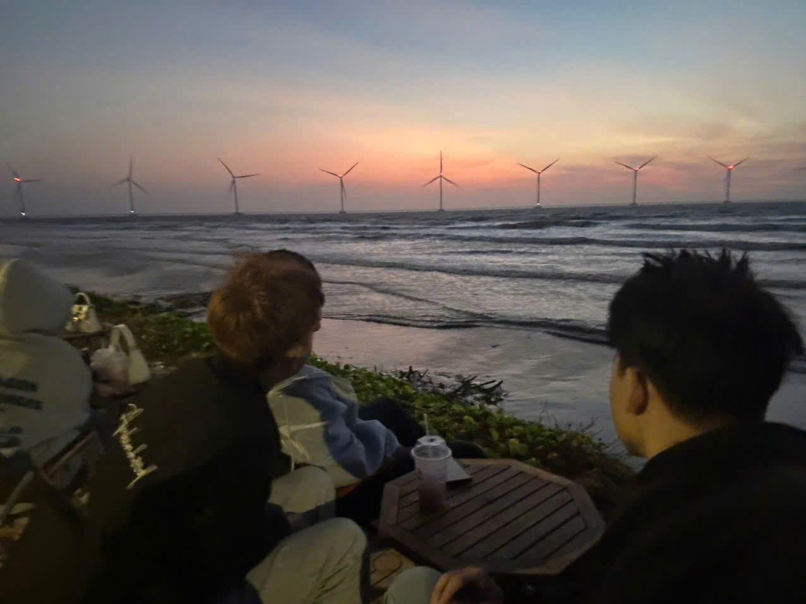
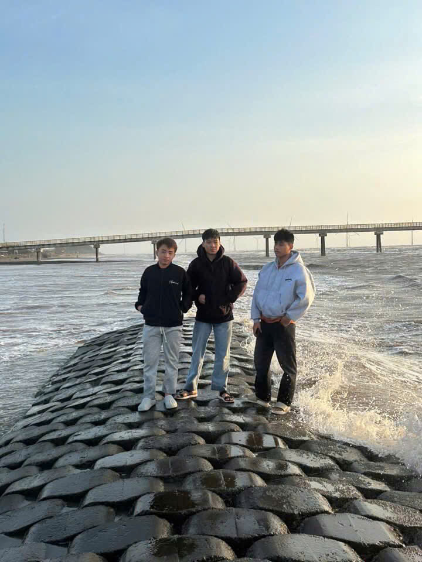

If I do not write this blog today, I think I will forget the true meaning of "travel".
For a long time, I am too busy with my study and life, so I didn't think about traveling. I almost forgot how it feel to pack a bag and go somewhere new. Everything change when my two close friends called me and said:
"Let's go together before it is too late."
So, the three of us decided to go.
We traveled by motorbike to a small place near the beach. The journey on our motorbikes was full of laughs and beautiful views. On the road, our small group drove together, felt the wind on our face, and stop at many beautiful places to take photos.
We talked about old stories, listen to our favorite music when we took a rest, and ate snacks like children.

When we arrived, the weather was beautiful with warm sunshine and blue sea. We swam together, ran on the sand, and ate a lot of delicious seafood.
At that moment, I felt so happy because I have my two true brothers by my side.
However, this trip was also very special and sad.
It was the last time the three of us can meet each other.
After that trip, everything changed. One friend had to join the military service, another friend went to a new city for university, and I stayed here with my own life.
We became very busy and couldn't find any free time to meet again. Our group chat with three people became quiet day by day.

Now, when I sit alone in my room and look at our old photos of three people, I miss them so much.
I really hope that one day in the future, we can meet again. I want us to sit together, talk face to face, and play video games like the old days when we were students.
Thank you for being a beautiful part of my youth, my brothers.